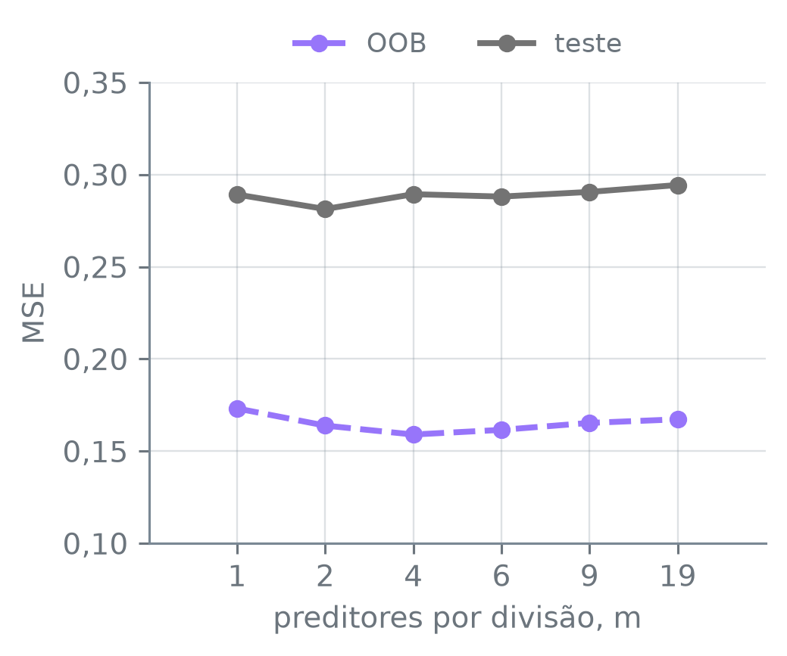
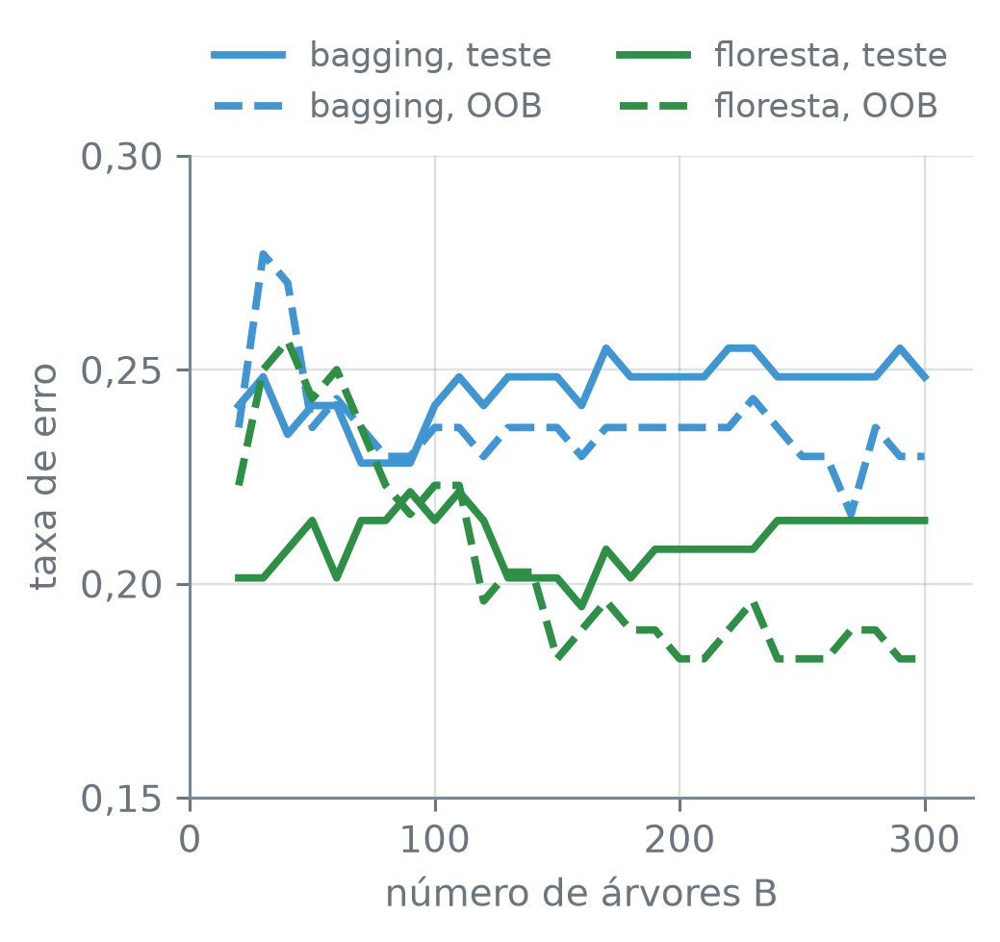

def numero_br(valor, casas=2):
texto = f"{valor:,.{casas}f}"
texto = texto.replace(",", "_").replace(".", ",").replace("_", ".")
return texto.replace("-", "−")Florestas Aleatórias
Nota
Esta seção corresponde à seção 8.2.2 de James et al. (2023).
No Hitters, várias colunas medem quase a mesma coisa: as vezes ao bastão, as rebatidas, as corridas e as bases por bolas acumuladas na carreira crescem juntas com o tempo de jogo de cada atleta. Uma árvore crescida numa amostra bootstrap procura o melhor corte entre todas as colunas, e o melhor tende a sair de uma dessas. Se quase toda árvore do bagging começa pela mesma pergunta, as árvores se parecem, e a média de árvores parecidas reduz menos a variância que a média de árvores diferentes. Dá para obrigar as árvores a serem diferentes umas das outras?
A função numero_br escreve os números com a pontuação brasileira:
Árvores parecidas demais
Os dados são os jogadores de Hitters com salário registrado, com o logaritmo do salário como resposta e as colunas de texto trocadas por indicadoras. O treino tem os mesmos 132 jogadores da seção 13.1, sorteados com a semente 12:
import numpy as np
import pandas as pd
from sklearn.model_selection import train_test_split
hitters = pd.read_csv("dados/Hitters.csv").dropna()
y = np.log(hitters["salario"])
X = pd.get_dummies(hitters.drop(columns="salario"), drop_first=True, dtype=float)
treino_X, teste_X, treino_y, teste_y = train_test_split(
X, y, train_size=132, random_state=12)
print("treino:", len(treino_X))
print("teste:", len(teste_X))
print("colunas:", X.shape[1])treino: 132
teste: 131
colunas: 19O bagging de árvores de regressão é o RandomForestRegressor com max_features=None, em que toda divisão de toda árvore pode usar qualquer uma das 19 colunas. A célula ajusta 500 árvores e lê a coluna da raiz de cada uma; a primeira linha mostra a da primeira árvore, e a tabela conta, para cada coluna, quantas árvores a usam na raiz:
from sklearn.ensemble import RandomForestRegressor
bagging = RandomForestRegressor(n_estimators=500, max_features=None, random_state=13)
bagging.fit(treino_X, treino_y)
primeira = bagging.estimators_[0]
print("raiz da primeira árvore:", X.columns[primeira.tree_.feature[0]])
raizes = []
for arvore in bagging.estimators_:
raizes.append(X.columns[arvore.tree_.feature[0]])
raizes_bag = pd.Series(raizes).value_counts()
tabela_bag = raizes_bag.to_frame("árvores")
tabela_bag["fração"] = tabela_bag["árvores"] / 500
tabela_bag["fração acumulada"] = tabela_bag["fração"].cumsum()
tabela_bag.style.format(precision=3, decimal=",", subset=["fração", "fração acumulada"])raiz da primeira árvore: vezes_ao_bastao_carreira| árvores | fração | fração acumulada | |
|---|---|---|---|
| vezes_ao_bastao_carreira | 243 | 0,486 | 0,486 |
| bases_por_bolas_carreira | 128 | 0,256 | 0,742 |
| rebatidas_carreira | 61 | 0,122 | 0,864 |
| corridas_carreira | 48 | 0,096 | 0,960 |
| anos | 11 | 0,022 | 0,982 |
| impulsionadas_carreira | 9 | 0,018 | 1,000 |
RandomForestRegressor(n_estimators, max_features, random_state) — ajusta n_estimators árvores de regressão sem limite de tamanho, cada uma numa amostra bootstrap do treino, e prevê com a média delas. max_features é o número de colunas sorteadas como candidatas em cada divisão; com None, todas são candidatas e o modelo é o bagging. O padrão do regressor, 1.0, também usa todas as colunas: sem dizer max_features, o RandomForestRegressor faz bagging. random_state fixa os sorteios.
arvore.tree_.feature — a posição, entre as colunas de X, da coluna usada em cada nó da árvore; o nó 0 é a raiz. X.columns — os nomes das colunas; X.columns[k] é o nome da coluna de posição k.
pd.Series(lista).value_counts() — quantas vezes cada valor aparece na lista, do mais frequente ao menos frequente. s.cumsum() — a soma acumulada: cada linha soma os valores dela e das de cima.
Só 6 das 19 colunas chegam à raiz de alguma árvore. A primeira da tabela, vezes_ao_bastao_carreira, está na raiz de quase metade das 500 árvores, e as três primeiras juntas, em mais de quatro de cada cinco. O número exato de árvores de cada coluna pode variar em uma ou duas de um computador para outro: numa amostra bootstrap, dois cortes em colunas diferentes podem ser igualmente bons, ou quase, e o desempate depende do arredondamento.
As árvores do bagging diferem porque as amostras diferem, mas a primeira pergunta, a que divide os jogadores em dois grupos grandes, se repete. Na seção 13.1, a variância da média de \(B\) árvores com variância \(\sigma^2\) e correlação \(\rho\) entre cada par saiu como \(\rho\,\sigma^2 + (1 - \rho)\,\sigma^2/B\): a parcela \(\rho\,\sigma^2\) não cai com \(B\). Árvores que se parecem têm \(\rho\) grande, e mais árvores não resolvem.
Sortear as colunas a cada divisão
A saída é impedir que a mesma coluna forte seja sempre a escolhida, e o jeito de impedir é tirá-la da disputa numa parte das divisões.
A floresta aleatória (random forest) ajusta, como o bagging, uma árvore sem poda em cada uma de \(B\) amostras bootstrap e prevê com a média (ou com o voto, em classificação). A diferença está em cada divisão de cada árvore: antes de procurar o melhor corte, sorteiam-se \(m\) dos \(p\) preditores, e o corte só pode usar um desses \(m\). O sorteio é refeito a cada divisão. A escolha usual é \(m \approx \sqrt{p}\), e com \(m = p\) a floresta é o bagging.
No Hitters, \(p = 19\) e \(\sqrt{19} \approx 4{,}4\), e a floresta usa \(m = 4\). Uma coluna fixa fica fora do sorteio de uma divisão com probabilidade \((p - m)/p = (19 - 4)/19 \approx 0{,}79\): em cerca de quatro de cada cinco divisões, vezes_ao_bastao_carreira nem é candidata, e outras colunas têm a sua vez.
O sorteio se vê num nó só. Na raiz de uma árvore de uma divisão ajustada no treino inteiro, sem amostra bootstrap, o melhor corte entre as 19 colunas é o primeiro número que a célula imprime. Depois ela sorteia 4 colunas e procura o melhor corte só entre elas:
from sklearn.tree import DecisionTreeRegressor
toco = DecisionTreeRegressor(max_depth=1, random_state=13)
toco.fit(treino_X, treino_y)
print("melhor corte entre as 19 colunas:", X.columns[toco.tree_.feature[0]])
sorteio = np.random.default_rng(13)
candidatas = sorteio.choice(X.columns, size=4, replace=False)
print("sorteio 1, candidatas:", ", ".join(candidatas))
toco_1 = DecisionTreeRegressor(max_depth=1, random_state=13)
toco_1.fit(treino_X[candidatas], treino_y)
print("sorteio 1, melhor corte entre as 4:", candidatas[toco_1.tree_.feature[0]])melhor corte entre as 19 colunas: vezes_ao_bastao_carreira
sorteio 1, candidatas: liga_seguinte_Nacional, liga_Nacional, divisao_Oeste, assistencias
sorteio 1, melhor corte entre as 4: assistenciasDecisionTreeRegressor(max_depth=1, random_state) — uma árvore de uma divisão só: a raiz e duas folhas. Com replace=False, o sorteio.choice sorteia 4 nomes sem repetir nenhum. ", ".join(nomes) — junta os nomes num texto só, separados por vírgula. treino_X[candidatas] — só as colunas sorteadas; a posição em tree_.feature passa a ser a posição dentro de candidatas.
O laço repete o sorteio mais cinco vezes, sempre no mesmo nó. A tabela tem uma linha por sorteio, as quatro candidatas em quatro colunas e, na última, a coluna em que o corte ficou:
def linha_do_sorteio(k, candidatas, toco):
linha = {"sorteio": k}
for j, nome in enumerate(candidatas, start=1):
linha[f"candidata {j}"] = nome
linha["corte em"] = candidatas[toco.tree_.feature[0]]
return linha
linhas = [linha_do_sorteio(1, candidatas, toco_1)]
for k in range(2, 7):
candidatas = sorteio.choice(X.columns, size=4, replace=False)
toco_k = DecisionTreeRegressor(max_depth=1, random_state=13)
toco_k.fit(treino_X[candidatas], treino_y)
linhas.append(linha_do_sorteio(k, candidatas, toco_k))
pd.DataFrame(linhas).set_index("sorteio")| candidata 1 | candidata 2 | candidata 3 | candidata 4 | corte em | |
|---|---|---|---|---|---|
| sorteio | |||||
| 1 | liga_seguinte_Nacional | liga_Nacional | divisao_Oeste | assistencias | assistencias |
| 2 | impulsionadas | rebatidas | home_runs | erros | rebatidas |
| 3 | divisao_Oeste | vezes_ao_bastao | erros | bases_por_bolas_carreira | bases_por_bolas_carreira |
| 4 | assistencias | divisao_Oeste | rebatidas_carreira | impulsionadas | rebatidas_carreira |
| 5 | bases_por_bolas | bases_por_bolas_carreira | eliminacoes | vezes_ao_bastao_carreira | vezes_ao_bastao_carreira |
| 6 | corridas_carreira | assistencias | rebatidas | erros | corridas_carreira |
A função linha_do_sorteio só monta o dicionário de uma linha da tabela; o sorteio e o ajuste ficam no laço, por extenso.
Em cinco dos seis sorteios, vezes_ao_bastao_carreira nem está entre as candidatas, e o corte vai para a melhor das quatro sorteadas: às vezes outra coluna de carreira, às vezes uma coluna de temporada. No sorteio em que ela é candidata, ganha. A floresta faz esse sorteio em cada divisão de cada árvore. A célula ajusta a floresta com \(m = 4\) no mesmo treino e com a mesma semente, e conta as raízes das 500 árvores do mesmo jeito:
floresta = RandomForestRegressor(n_estimators=500, max_features=4, random_state=13)
floresta.fit(treino_X, treino_y)
raizes = []
for arvore in floresta.estimators_:
raizes.append(X.columns[arvore.tree_.feature[0]])
raizes_flo = pd.Series(raizes).value_counts()
print("colunas na raiz, bagging:", len(raizes_bag))
print("colunas na raiz, floresta:", len(raizes_flo))
tabela_flo = raizes_flo.head().to_frame("árvores")
tabela_flo["fração"] = tabela_flo["árvores"] / 500
tabela_flo.style.format(precision=3, decimal=",", subset=["fração"])colunas na raiz, bagging: 6
colunas na raiz, floresta: 15| árvores | fração | |
|---|---|---|
| vezes_ao_bastao_carreira | 91 | 0,182 |
| rebatidas_carreira | 84 | 0,168 |
| corridas_carreira | 75 | 0,150 |
| bases_por_bolas_carreira | 72 | 0,144 |
| impulsionadas_carreira | 37 | 0,074 |
Na floresta, 15 colunas chegam à raiz, contra 6 no bagging, e nenhuma está na raiz de um quinto das árvores: a primeira linha da tabela fica abaixo de 0,2. Nas divisões em que a melhor coluna ficou fora do sorteio, a árvore corta por uma coluna mais fraca. Cada árvore da floresta, sozinha, fica melhor ou pior que uma árvore do bagging? A célula mede o MSE de cada uma das 500 árvores nos 131 jogadores de teste e tira a média, nos dois modelos:
from sklearn.metrics import mean_squared_error
uma_arvore = {}
for nome, modelo in [("bagging", bagging), ("floresta", floresta)]:
erros_arvores = []
for arvore in modelo.estimators_:
previsto = arvore.predict(teste_X.to_numpy())
erros_arvores.append(mean_squared_error(teste_y, previsto))
uma_arvore[nome] = np.mean(erros_arvores)
media_500 = pd.Series(uma_arvore).to_frame("MSE de teste de uma árvore, média das 500")
media_500.style.format(precision=4, decimal=",")| MSE de teste de uma árvore, média das 500 | |
|---|---|
| bagging | 0,4656 |
| floresta | 0,4845 |
O sorteio tem um custo: o MSE de uma árvore da floresta, na média das 500, fica mais de 0,01 acima do de uma árvore do bagging. A figura põe as duas contagens de raízes lado a lado, com as oito colunas que mais aparecem na raiz somando os dois modelos:
import matplotlib.pyplot as plt
colunas = raizes_bag.add(raizes_flo, fill_value=0).sort_values(ascending=False).index[:8]
fig, eixos = plt.subplots(2, 1, figsize=(3.8, 4.6), sharex=True)
paineis = [(eixos[0], raizes_bag, "C0", "bagging, m = 19"),
(eixos[1], raizes_flo, "C2", "floresta, m = 4")]
for ax, raizes_modelo, cor, titulo in paineis:
contagem = raizes_modelo.reindex(colunas, fill_value=0)
ax.barh(range(8), contagem.values, color=cor, height=0.7)
ax.set_yticks(range(8), colunas, fontsize=8)
ax.invert_yaxis()
ax.set_title(titulo, loc="left", fontsize=9)
eixos[1].set_xlim(0, 300)
eixos[1].set_xlabel("árvores com a coluna na raiz")
plt.tight_layout()
plt.show()![Dois gráficos de barras horizontais empilhados, com o mesmo eixo horizontal, de 0 a 300 árvores, e oito colunas do Hitters no eixo vertical. No de cima, o bagging, em azul, a barra de vezes_ao_bastao_carreira chega perto de 250, a de bases_por_bolas_carreira passa de 100, a de rebatidas_carreira fica perto de 60, e as outras são curtas ou vazias. No de baixo, a floresta, em verde, as quatro primeiras barras ficam entre cerca de 70 e 90 árvores cada, e as outras entre cerca de 20 e 40: nenhuma domina.](03-florestas-aleatorias_files/figure-html/fig-raizes-output-1.png)
Hitters. Em cima, o bagging, em que toda divisão pode usar as 19 colunas (azul); embaixo, a floresta aleatória com \(m = 4\) colunas sorteadas por divisão (verde). As oito colunas são as mais frequentes somando os dois modelos.
s.add(outra, fill_value=0) — soma duas séries rótulo a rótulo; um rótulo que só existe numa delas conta como 0 na outra. s.sort_values(ascending=False) — a série em ordem decrescente de valor. s.index[:8] — os oito primeiros rótulos. s.reindex(rotulos, fill_value=0) — a série na ordem de rotulos, com 0 para o rótulo que ela não tem.
Em plt.subplots(2, 1, ..., sharex=True), os dois primeiros números pedem dois painéis, um sobre o outro, e sharex=True dá aos dois o mesmo eixo horizontal; eixos é a lista dos painéis. ax.barh(posicoes, larguras, color, height) — barras horizontais. ax.invert_yaxis() — põe a primeira barra no alto. ax.set_title(titulo, loc="left", fontsize) — o título do painel, alinhado à esquerda.
Uma raiz diferente puxa o resto da árvore: os dois grupos em que a raiz divide os jogadores são outros, e as perguntas seguintes também. Uma forma de ver o quanto as árvores de um mesmo modelo se parecem é olhar para as previsões delas nos 131 jogadores do teste. Se duas árvores sobem e descem juntas de jogador para jogador, a correlação entre as previsões delas é alta. A célula pega as duas primeiras árvores do bagging, mostra as previsões das duas para os cinco primeiros jogadores de teste e calcula a correlação entre as 131 previsões de uma e as 131 da outra:
arvore_1 = bagging.estimators_[0]
arvore_2 = bagging.estimators_[1]
previsto_1 = arvore_1.predict(teste_X.to_numpy())
previsto_2 = arvore_2.predict(teste_X.to_numpy())
duas = pd.DataFrame({"árvore 1": previsto_1, "árvore 2": previsto_2}, index=teste_X.index)
print("correlação entre as duas árvores:", numero_br(np.corrcoef(previsto_1, previsto_2)[0, 1]))
duas.head().style.format(precision=2, decimal=",")correlação entre as duas árvores: 0,85| árvore 1 | árvore 2 | |
|---|---|---|
| 117 | 5,30 | 5,99 |
| 156 | 5,99 | 4,61 |
| 12 | 5,86 | 6,33 |
| 63 | 5,22 | 5,35 |
| 70 | 5,30 | 5,30 |
np.corrcoef(a, b) — a matriz de correlações entre a e b, de 2 × 2; o elemento [0, 1] é a correlação entre os dois.
A mesma conta vale para cada par de árvores. A célula seguinte ajusta 200 árvores para cada \(m\), de 19 (o bagging) a 1, calcula a correlação de todos os pares e tira a média. Antes de rodar: com \(m = 1\), em que a coluna de cada divisão é sorteada sem escolha nenhuma, a correlação deve subir ou cair?
pares = np.triu_indices(200, k=1)
correlacao = {}
for m in [19, 9, 6, 4, 2, 1]:
modelo = RandomForestRegressor(n_estimators=200, max_features=m, random_state=13)
modelo.fit(treino_X, treino_y)
previsoes_arvores = []
for arvore in modelo.estimators_:
previsoes_arvores.append(arvore.predict(teste_X.to_numpy()))
matriz = np.corrcoef(np.array(previsoes_arvores))
correlacao[m] = matriz[pares].mean()
tabela_corr = pd.Series(correlacao).rename_axis("m").to_frame("correlação média")
tabela_corr.style.format(precision=2, decimal=",")| correlação média | |
|---|---|
| m | |
| 19 | 0,82 |
| 9 | 0,80 |
| 6 | 0,79 |
| 4 | 0,78 |
| 2 | 0,74 |
| 1 | 0,65 |
np.array(lista) — um array a partir de uma lista; aqui, uma linha por árvore e uma coluna por jogador de teste. Com uma matriz só, np.corrcoef correlaciona as linhas: o resultado tem uma linha e uma coluna por árvore, e a posição [i, j] é a correlação entre as árvores i e j. np.triu_indices(n, k=1) — as posições acima da diagonal de uma matriz \(n \times n\), isto é, cada par de árvores uma vez só, sem a árvore com ela mesma.
A correlação cai a cada \(m\) menor, linha a linha na tabela: de 0,82 no bagging a 0,78 com \(m = 4\) e 0,65 com \(m = 1\). Mesmo com \(m = 1\) as árvores continuam parecidas, porque todas veem os mesmos 132 jogadores e todas tentam prever o mesmo salário. Toda árvore razoável acompanha o salário, alto para uns jogadores e baixo para outros, e isso sozinho já deixa a correlação alta.
Essa correlação mostra o quanto as árvores de um treino se parecem, e não é o \(\rho\) da fórmula: o \(\rho\) fixa um jogador e se mede ao longo de muitos conjuntos de treino.
A variância da média cai, então? Quem responde é a medição da seção 13.1: 50 conjuntos de treino de 132 jogadores sorteados entre os 263 e, em cada um, o bagging e a floresta com \(m = 4\), de 50 árvores cada, prevendo os jogadores que ficaram de fora.
A matriz de previsões tem uma linha por conjunto de treino e uma coluna por jogador, e começa toda nan; cada treino preenche só as colunas dos jogadores que ficaram de fora, como na seção 13.1:
posicoes = np.arange(len(X))
previsoes = {"bagging": np.full((50, len(X)), np.nan),
"floresta": np.full((50, len(X)), np.nan)}
erro_fora = {"bagging": np.zeros(50), "floresta": np.zeros(50)}
for s in range(50):
dentro, fora = train_test_split(posicoes, train_size=132, random_state=s)
for nome, m in [("bagging", None), ("floresta", 4)]:
modelo = RandomForestRegressor(n_estimators=50, max_features=m, random_state=13)
modelo.fit(X.iloc[dentro], y.iloc[dentro])
previsto = modelo.predict(X.iloc[fora])
previsoes[nome][s, fora] = previsto
erro_fora[nome][s] = mean_squared_error(y.iloc[fora], previsto)
print("previsões guardadas por modelo:", np.isfinite(previsoes["bagging"]).sum())previsões guardadas por modelo: 6550np.zeros(n) — um array de n zeros; aqui, um lugar para o erro de cada conjunto de treino. np.isfinite(m) — True onde m tem um número, e não nan; somado, conta as previsões guardadas.
Um jogador por extenso: o de salário mediano. A célula pega a coluna dele nas duas matrizes, fica com os treinos em que ele ficou de fora e calcula a variância das previsões de cada modelo:
mediano = np.argsort(y.values, kind="stable")[len(y) // 2]
fora_dele = np.isfinite(previsoes["bagging"][:, mediano])
do_jogador = pd.DataFrame({
"bagging": previsoes["bagging"][fora_dele, mediano],
"floresta": previsoes["floresta"][fora_dele, mediano],
}, index=np.flatnonzero(fora_dele))
do_jogador.index.name = "treino"
print("treinos em que ele ficou de fora:", len(do_jogador))
print("log do salário observado:", numero_br(y.values[mediano]))
print("variância das previsões, bagging:", numero_br(do_jogador["bagging"].var(ddof=0), 4))
print("variância das previsões, floresta:", numero_br(do_jogador["floresta"].var(ddof=0), 4))
do_jogador.head().style.format(precision=2, decimal=",")treinos em que ele ficou de fora: 23
log do salário observado: 6,05
variância das previsões, bagging: 0,0185
variância das previsões, floresta: 0,0160| bagging | floresta | |
|---|---|---|
| treino | ||
| 5 | 6,15 | 6,19 |
| 8 | 6,22 | 6,02 |
| 10 | 6,15 | 6,02 |
| 11 | 6,44 | 6,23 |
| 13 | 6,11 | 5,92 |
np.flatnonzero(m) — as posições em que m vale True; aqui, os números dos treinos em que o jogador ficou de fora.
As previsões desse jogador mudam de um treino para outro nos dois modelos, e a variância da floresta sai abaixo da do bagging: as duas estão impressas lado a lado acima da tabela.
A mesma conta, para cada um dos 263 jogadores, sai da matriz inteira de uma vez: o np.nanvar e o np.nanmean da seção 13.1 ignoram os nan de cada coluna.
var = {}
medias = {}
for nome in ["bagging", "floresta"]:
p = previsoes[nome]
var[nome] = np.nanvar(p, axis=0)
resto = (np.nanmean(p, axis=0) - y.values) ** 2
erro_medio = np.nanmean((p - y.values) ** 2, axis=0)
medias[nome] = {"erro": erro_medio.mean(), "variância": var[nome].mean(),
"resto": resto.mean(),
"variância + resto": var[nome].mean() + resto.mean()}
tabela_medias = pd.DataFrame(medias).T
tabela_medias.style.format(precision=2, decimal=",").format(
precision=3, decimal=",", subset=["variância"])| erro | variância | resto | variância + resto | |
|---|---|---|---|---|
| bagging | 0,23 | 0,026 | 0,20 | 0,23 |
| floresta | 0,21 | 0,018 | 0,20 | 0,21 |
df.T — a tabela transposta; pd.DataFrame(medias) tem um modelo por coluna, e .T o põe um por linha.
A conta é a da seção 13.1: para cada jogador, a variância das previsões e o resto, o quadrado da distância entre o centro delas e o log do salário observado, e as médias sobre os 263 jogadores. A variância média cai de 0,026 no bagging para 0,018 na floresta, uma queda de 0,026 − 0,018 = 0,008, quase um terço de 0,026. O resto fica em 0,20 nos dois, e o erro médio nos jogadores de fora cai de 0,23 para 0,21.
As parcelas impressas estão arredondadas, e por isso 0,018 + 0,20 não dá 0,21 na página; a última coluna soma as duas sem arredondar, e dá o erro, nos dois modelos.
A média sobre os jogadores e sobre os treinos esconde os casos. A célula conta os jogadores em que a variância da floresta é menor e os treinos em que a floresta erra menos, e a figura mostra cada caso:
menor = (var["floresta"] < var["bagging"]).sum()
ganhou = (erro_fora["floresta"] < erro_fora["bagging"]).sum()
print("jogadores com variância menor na floresta:", menor, "de", len(X))
print("treinos em que a floresta erra menos:", ganhou, "de 50")jogadores com variância menor na floresta: 229 de 263
treinos em que a floresta erra menos: 42 de 50def virgula(valor, posicao):
return f"{valor:.2f}".replace(".", ",")
def virgula_log(valor, posicao):
return f"{valor:g}".replace(".", ",")
todas_var = np.concatenate([var["bagging"], var["floresta"]])
baixo, alto = todas_var.min() / 1.5, todas_var.max() * 1.5
fig, eixos = plt.subplots(1, 2, figsize=(6.4, 3.4))
ax = eixos[0]
ax.axline((baixo, baixo), (alto, alto), color="0.45", linewidth=1.5)
ax.scatter(var["bagging"], var["floresta"], s=14, color="C0", alpha=0.6)
ax.set_xscale("log")
ax.set_yscale("log")
ax.set_xlim(baixo, alto)
ax.set_ylim(baixo, alto)
ax.xaxis.set_major_formatter(virgula_log)
ax.yaxis.set_major_formatter(virgula_log)
ax.set_title("variância das previsões, escala log", loc="left", fontsize=9)
ax = eixos[1]
ax.axline((0, 0), slope=1, color="0.45", linewidth=1.5)
ax.scatter(erro_fora["bagging"], erro_fora["floresta"], s=14, color="C0", alpha=0.6)
ax.set_xlim(0, 0.40)
ax.set_ylim(0, 0.40)
ax.xaxis.set_major_formatter(virgula)
ax.yaxis.set_major_formatter(virgula)
ax.set_title("MSE nos jogadores de fora", loc="left", fontsize=9)
for ax in eixos:
ax.set_aspect("equal")
ax.set_xlabel("bagging")
ax.set_ylabel("floresta, m = 4")
plt.tight_layout()
plt.show()![Dois gráficos de dispersão lado a lado, cada um com uma diagonal cinza. No da esquerda, um ponto azul por jogador, com a variância do bagging no eixo horizontal e a da floresta no vertical, os dois em escala logarítmica; a maior parte dos pontos fica abaixo da diagonal, num aglomerado entre cerca de 0,002 e 0,1, e três jogadores ficam isolados acima dele, com variância de cerca de 0,1 a 1, dois deles sobre a diagonal. No da direita, um ponto azul por conjunto de treino, com o MSE do bagging no eixo horizontal e o da floresta no vertical; a maior parte dos pontos fica abaixo da diagonal, e alguns ficam acima.](03-florestas-aleatorias_files/figure-html/fig-caso-a-caso-output-1.png)
Com os dois eixos em escala log, a diagonal \(y = x\) continua reta, mas não passa pelo zero, que a escala log não tem; por isso ax.axline recebe dois pontos dela. np.concatenate([a, b]) — junta os dois arrays num só; aqui, para achar a menor e a maior variância dos dois modelos e fixar os limites do painel a partir delas.
A variância é menor na floresta em mais de 200 dos 263 jogadores, e a floresta erra menos que o bagging em mais de 35 dos 50 treinos, mas não em todos: no painel da direita, há pontos dos dois lados da diagonal.
Na divisão da semente 12, uma árvore da floresta, em média, errou mais no teste que uma árvore do bagging; nos 50 treinos, a média da floresta errou menos que a do bagging na maior parte deles. Nessas duas medições, o que a média ganhou por juntar árvores menos parecidas compensou o que uma árvore, em média, perdeu.
Quantas colunas sortear
Com quantas colunas sorteadas por divisão a floresta erra menos? O \(m\) é o parâmetro que a floresta acrescenta ao bagging, e o erro OOB da seção 13.2 permite escolhê-lo sem separar jogadores e sem validação cruzada: um ajuste por valor de \(m\). No regressor, o oob_score_ é o \(R^2\), e o MSE OOB sai das previsões guardadas em oob_prediction_. A célula mede, para cada \(m\), o MSE OOB nos 132 jogadores de treino e o MSE nos 131 do teste, com 500 árvores:
def tres_casas(valor):
return numero_br(valor, 3)
linhas = []
for m in [19, 9, 6, 4, 2, 1]:
modelo = RandomForestRegressor(n_estimators=500, max_features=m, oob_score=True,
random_state=13)
modelo.fit(treino_X, treino_y)
linhas.append({"m": m,
"oob": mean_squared_error(treino_y, modelo.oob_prediction_),
"teste": mean_squared_error(teste_y, modelo.predict(teste_X))})
erros_m = pd.DataFrame(linhas).set_index("m")
erros_m["teste − oob"] = erros_m["teste"] - erros_m["oob"]
erros_m["oob − oob de m = 4"] = erros_m["oob"] - erros_m.loc[4, "oob"]
erros_m.style.format(tres_casas)| oob | teste | teste − oob | oob − oob de m = 4 | |
|---|---|---|---|---|
| m | ||||
| 19 | 0,167 | 0,294 | 0,127 | 0,008 |
| 9 | 0,165 | 0,291 | 0,125 | 0,006 |
| 6 | 0,162 | 0,288 | 0,127 | 0,003 |
| 4 | 0,159 | 0,289 | 0,130 | 0,000 |
| 2 | 0,164 | 0,281 | 0,117 | 0,005 |
| 1 | 0,173 | 0,289 | 0,116 | 0,014 |
modelo.oob_prediction_ — num regressor ajustado com oob_score=True, a previsão OOB de cada linha de treino, a média das árvores que não a sortearam; tres_casas passa cada valor ao numero_br. df.loc[4, "oob"] — o valor da linha de rótulo 4 na coluna oob; a última coluna é a distância de cada OOB ao de \(m = 4\).
A célula seguinte lê as duas colunas de erro: o \(m\) de menor valor e a amplitude, a distância entre o maior e o menor valor:
leitura = pd.DataFrame({
"m de menor erro": [erros_m["oob"].idxmin(), erros_m["teste"].idxmin()],
"amplitude": [erros_m["oob"].max() - erros_m["oob"].min(),
erros_m["teste"].max() - erros_m["teste"].min()],
}, index=["oob", "teste"])
leitura.style.format(tres_casas, subset=["amplitude"])| m de menor erro | amplitude | |
|---|---|---|
| oob | 4 | 0,014 |
| teste | 2 | 0,013 |
s.idxmin() — o rótulo do menor valor; aqui, o \(m\) de menor erro.
O MSE OOB vai de 0,167 com \(m = 19\), o bagging, a 0,159 com \(m = 4\). Na última coluna da tabela de erros, o OOB das duas pontas, \(m = 19\) e \(m = 1\), fica mais de 0,005 acima do de \(m = 4\). O menor OOB está em \(m = 4\) ou em \(m = 6\): pelo OOB, a escolha seria um desses dois.
O teste, nos 131 jogadores de fora, põe o menor erro em \(m = 2\), e fica entre 0,27 e 0,30 em todos os \(m\). As duas medidas variam pouco de um \(m\) para outro, menos de 0,02 nas duas colunas, e com diferenças desse tamanho a ordem entre os \(m\) do meio muda de uma medida para a outra. O OOB do \(m\) escolhido é também o menor de seis estimativas feitas com os mesmos jogadores, com o otimismo de que a seção 13.2 falou.
por_m = erros_m.sort_index()
posicoes_m = range(len(por_m))
fig, ax = plt.subplots(figsize=(3.8, 3.2))
ax.plot(posicoes_m, por_m["oob"], color="C3", marker="o", linestyle="--", label="OOB")
ax.plot(posicoes_m, por_m["teste"], color="0.45", marker="o", label="teste")
ax.set_xticks(posicoes_m, por_m.index)
ax.set_ylim(0.10, 0.35)
ax.set_xlabel("preditores por divisão, m")
ax.set_ylabel("MSE")
ax.yaxis.set_major_formatter(virgula)
ax.legend(loc="lower center", bbox_to_anchor=(0.5, 1.0), ncol=2)
plt.tight_layout()
plt.show()
Hitters contra o número \(m\) de preditores sorteados por divisão, de 1 a 19; \(m = 19\) é o bagging. Em roxo tracejado, o MSE OOB nos 132 jogadores de treino; em cinza, o MSE nos 131 jogadores de teste. Aqui as cores separam as duas medidas de erro, não o bagging e a floresta. Os valores de \(m\) estão igualmente espaçados no eixo.
df.sort_index() — a tabela em ordem crescente dos rótulos das linhas; aqui, de \(m = 1\) a \(m = 19\). Os pontos ficam nas posições 0 a 5, e set_xticks escreve o \(m\) de cada um embaixo.
O OOB fica abaixo do teste em todos os \(m\): a coluna teste − oob da tabela é positiva em todas as linhas. Os dois medem o erro em jogadores diferentes: o OOB, nos 132 do treino, cada um previsto pelas árvores que não o sortearam; o teste, nos 131 que ficaram de fora. Com uma divisão só, um grupo pode sair mais fácil de prever que o outro, e a distância de nível vale para todo \(m\), sem dizer nada sobre qual \(m\) é melhor.
O que se lê da figura é a ordem dentro de cada curva, e ela não é a mesma nas duas. Os 50 conjuntos de treino medidos antes, que trocam de divisão a cada vez, dão o sinal mais firme sobre \(m = 4\) contra o bagging: a floresta errou menos em mais de 35 deles.
Bagging contra floresta nos pacientes
Em classificação, a comparação se faz do mesmo jeito. Os pacientes do Heart estão divididos como na seção 13.2: metade para o teste, sorteada com a semente 13, e as colunas de texto trocadas por indicadoras de todas as categorias.
coracao = pd.read_csv("dados/Heart.csv").dropna()
y_c = coracao["doenca_cardiaca"]
X_c = pd.get_dummies(coracao.drop(columns="doenca_cardiaca"), dtype=float)
treino_Xc, teste_Xc, treino_yc, teste_yc = train_test_split(
X_c, y_c, test_size=0.5, random_state=13, stratify=y_c)
print("treino:", len(treino_Xc))
print("teste:", len(teste_Xc))
print("colunas:", X_c.shape[1])treino: 148
teste: 149
colunas: 18Com 18 colunas, \(\sqrt{18} \approx 4{,}2\), e a floresta sorteia 4 colunas por divisão: o max_features="sqrt", que é o padrão do RandomForestClassifier. A célula faz crescer o bagging e a floresta de 10 em 10 árvores, de 20 a 300, e mede o erro OOB e o de teste em cada tamanho. Com 4 colunas por divisão em vez de 18, a floresta deve errar menos em todo tamanho, ou só a partir de muitas árvores?
from sklearn.ensemble import RandomForestClassifier
tamanhos = range(20, 301, 10)
curvas = {}
for nome, m in [("bagging", None), ("floresta", "sqrt")]:
modelo = RandomForestClassifier(n_estimators=20, max_features=m, oob_score=True,
warm_start=True, random_state=13)
curva = pd.DataFrame(index=tamanhos, columns=["oob", "teste"], dtype=float)
for B in tamanhos:
modelo.set_params(n_estimators=B)
modelo.fit(treino_Xc, treino_yc)
curva.loc[B] = [1 - modelo.oob_score_, 1 - modelo.score(teste_Xc, teste_yc)]
curvas[nome] = curva
print("m da floresta:", modelo.estimators_[0].max_features_)
em_300 = pd.DataFrame({
"teste": [curvas["bagging"].loc[300, "teste"], curvas["floresta"].loc[300, "teste"]],
"erros de teste": [round(curvas["bagging"].loc[300, "teste"] * 149),
round(curvas["floresta"].loc[300, "teste"] * 149)],
"erros OOB": [round(curvas["bagging"].loc[300, "oob"] * 148),
round(curvas["floresta"].loc[300, "oob"] * 148)],
}, index=["bagging", "floresta"])
em_300.style.format(precision=4, decimal=",", subset=["teste"])m da floresta: 4| teste | erros de teste | erros OOB | |
|---|---|---|---|
| bagging | 0,2483 | 37 | 34 |
| floresta | 0,2148 | 32 | 27 |
warm_start=True — num novo fit, o modelo mantém as árvores já ajustadas e só acrescenta as que faltam, e modelo.set_params(n_estimators=B) muda o número de árvores antes do próximo fit. arvore.max_features_ — o número de colunas sorteadas em cada divisão daquela árvore, já convertido de "sqrt" para um inteiro. round(x) — o inteiro mais próximo; a taxa de erro vezes 149, ou 148, vira um número de pacientes.
Com 300 árvores, o bagging erra 37 dos 149 pacientes de teste e a floresta, 32, cinco pacientes a menos (37 − 32 = 5). Em 300 árvores, o erro OOB da floresta também fica abaixo do OOB do bagging, por quatro ou mais pacientes de treino. Nos outros tamanhos, a célula conta quantos pacientes de teste a floresta erra a menos que o bagging e agrupa os 29 tamanhos por essa diferença:
distancia = curvas["bagging"]["teste"] - curvas["floresta"]["teste"]
pacientes = (distancia * 149).round().astype(int)
pacientes.value_counts().sort_index().rename_axis(
"erros a menos da floresta").to_frame("tamanhos")| tamanhos | |
|---|---|
| erros a menos da floresta | |
| 1 | 1 |
| 2 | 2 |
| 4 | 5 |
| 5 | 6 |
| 6 | 6 |
| 7 | 9 |
s.round().astype(int) — arredonda cada valor para o inteiro mais próximo e o guarda como inteiro. s.value_counts().sort_index() — quantas vezes cada valor aparece, em ordem crescente do valor.
Em 28 dos 29 tamanhos a floresta erra pelo menos dois pacientes a menos que o bagging, e em nenhum erra mais: a tabela não tem linha com diferença negativa, e só um tamanho fica abaixo de 2.
fig, ax = plt.subplots(figsize=(3.8, 3.6))
for nome, cor in [("bagging", "C0"), ("floresta", "C2")]:
ax.plot(curvas[nome].index, curvas[nome]["teste"], color=cor, label=f"{nome}, teste")
ax.plot(curvas[nome].index, curvas[nome]["oob"], color=cor, linestyle="--",
label=f"{nome}, OOB")
ax.set_xlim(0, 320)
ax.set_ylim(0.15, 0.30)
ax.set_yticks(np.arange(0.15, 0.31, 0.05))
ax.yaxis.set_major_formatter(virgula)
ax.set_xlabel("número de árvores B")
ax.set_ylabel("taxa de erro")
ax.legend(loc="lower center", bbox_to_anchor=(0.5, 1.0), ncol=2)
plt.tight_layout()
plt.show()
Heart contra o número de árvores \(B\), do bagging (azul) e da floresta aleatória com 4 colunas sorteadas por divisão (verde). A linha contínua é o erro nos 149 pacientes de teste; a tracejada, o erro OOB nos 148 de treino.
Cinco pacientes de 149 são uma diferença de 5/149 = 0,034 na taxa de erro, e outra divisão dos 297 pacientes daria outros erros aos dois modelos. A célula refaz a comparação em 20 divisões, com as sementes 0 a 19, cada uma com 200 árvores por modelo, e conta os erros de teste:
linhas = []
for s in range(20):
tr_X, te_X, tr_y, te_y = train_test_split(
X_c, y_c, test_size=0.5, random_state=s, stratify=y_c)
erros_divisao = {"semente": s}
for nome, m in [("bagging", None), ("floresta", "sqrt")]:
modelo = RandomForestClassifier(n_estimators=200, max_features=m, random_state=13)
modelo.fit(tr_X, tr_y)
previsto = modelo.predict(te_X)
erros_divisao[nome] = (previsto != te_y).sum()
linhas.append(erros_divisao)
erros = pd.DataFrame(linhas).set_index("semente")
erros["vantagem da floresta"] = erros["bagging"] - erros["floresta"]
def inteiro(valor):
return numero_br(valor, 0)
erros.style.format(inteiro)| bagging | floresta | vantagem da floresta | |
|---|---|---|---|
| semente | |||
| 0 | 42 | 38 | 4 |
| 1 | 35 | 31 | 4 |
| 2 | 28 | 22 | 6 |
| 3 | 36 | 30 | 6 |
| 4 | 34 | 35 | −1 |
| 5 | 30 | 30 | 0 |
| 6 | 22 | 20 | 2 |
| 7 | 38 | 29 | 9 |
| 8 | 31 | 36 | −5 |
| 9 | 35 | 34 | 1 |
| 10 | 32 | 30 | 2 |
| 11 | 34 | 33 | 1 |
| 12 | 29 | 30 | −1 |
| 13 | 37 | 31 | 6 |
| 14 | 27 | 26 | 1 |
| 15 | 43 | 31 | 12 |
| 16 | 22 | 18 | 4 |
| 17 | 24 | 21 | 3 |
| 18 | 28 | 22 | 6 |
| 19 | 30 | 29 | 1 |
(previsto != te_y).sum() — o número de pacientes de teste em que a previsão difere da resposta, isto é, os erros.
A função inteiro escreve os números da tabela sem casas decimais e com o sinal de menos. A coluna da direita é o número de pacientes que a floresta erra a menos; negativa, quando o bagging erra menos. A célula conta e resume:
vantagem = erros["vantagem da floresta"]
print("floresta erra menos:", (vantagem > 0).sum(), "de 20")
print("empate:", (vantagem == 0).sum(), "de 20")
print("bagging erra menos:", (vantagem < 0).sum(), "de 20")
print("vantagem média da floresta, em pacientes:", numero_br(vantagem.mean(), 1))
print("maior vantagem do bagging, em pacientes:", -vantagem.min())floresta erra menos: 16 de 20
empate: 1 de 20
bagging erra menos: 3 de 20
vantagem média da floresta, em pacientes: 3,0
maior vantagem do bagging, em pacientes: 5A floresta errou menos em 16 das 20 divisões, empatou em 1 e errou mais em 3. Em média, errou 3,0 pacientes a menos, e em ao menos uma divisão o bagging ganhou por mais de dois pacientes. No Heart, como no Hitters, sortear as colunas ajudou na maior parte das divisões, sem ganhar em todas.
Sortear as colunas troca árvores melhores por árvores menos parecidas. Um \(m\) pequeno costuma ajudar quando há muitos preditores correlacionados entre si, como as colunas de carreira do Hitters, cujas correlações a seção 12.5 mediu: quando vezes_ao_bastao_carreira fica fora do sorteio, outra coluna de carreira quase igual a ela pode entrar no lugar. Um \(m\) pequeno pode atrapalhar, num caso não medido aqui, quando há poucas colunas com sinal entre muitas de ruído: muitas divisões ficam só com colunas de ruído para escolher (Hastie et al. 2009, seção 15.3.4). Por isso o \(m\) é um parâmetro a escolher, e \(m = p\), o bagging, é um dos valores da escolha.
Hastie, Trevor, Robert Tibshirani, e Jerome Friedman. 2009. The Elements of Statistical Learning. 2nd ed. Springer.
James, Gareth, Daniela Witten, Trevor Hastie, Robert Tibshirani, e Jonathan Taylor. 2023. An Introduction to Statistical Learning with Applications in Python. Springer.